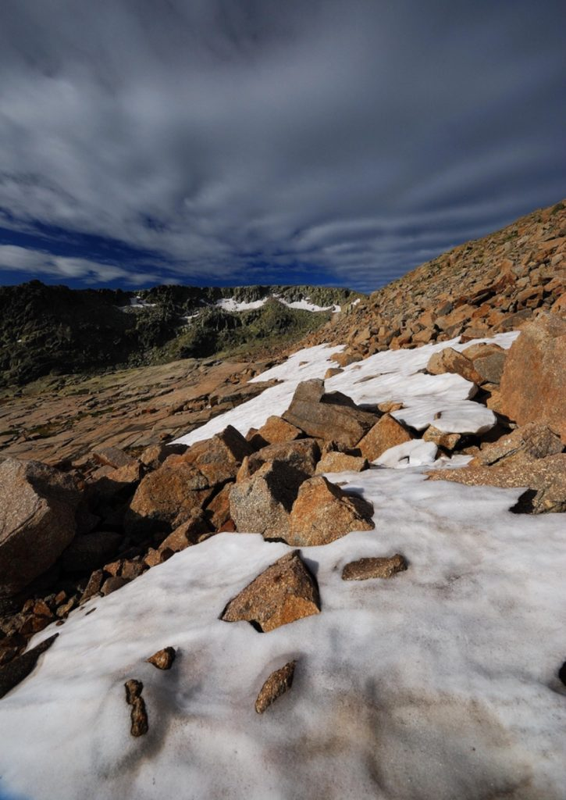
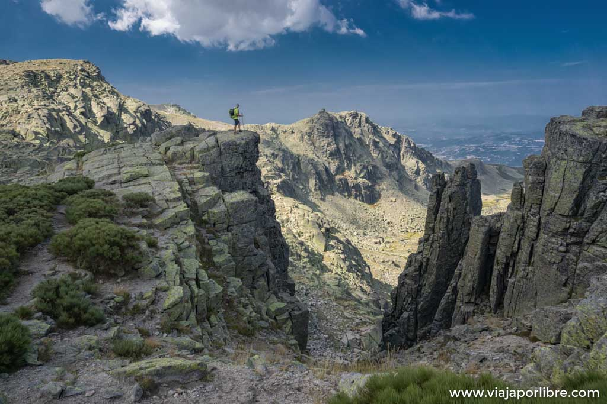
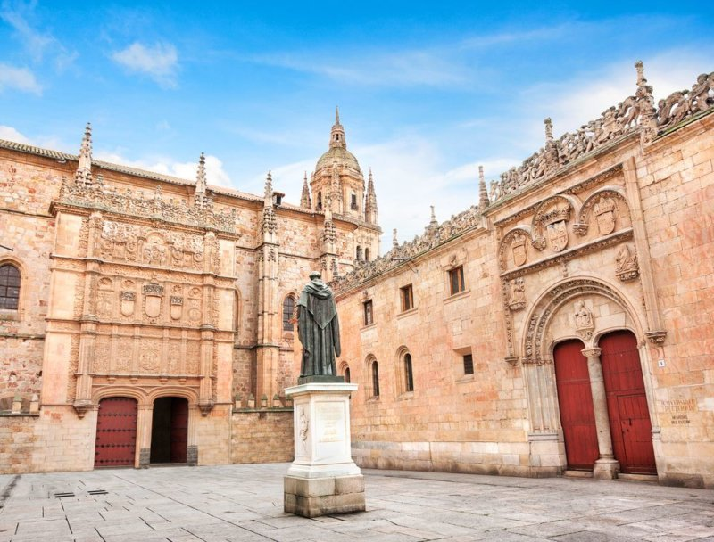
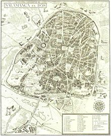
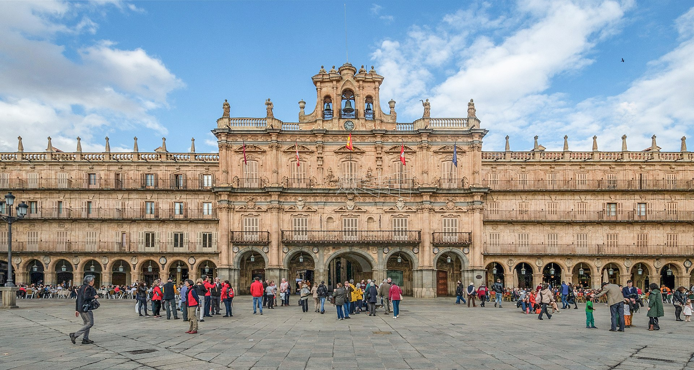
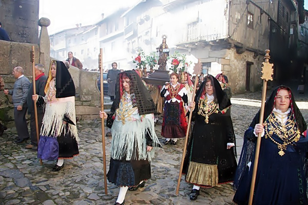
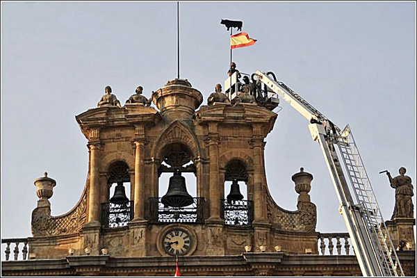
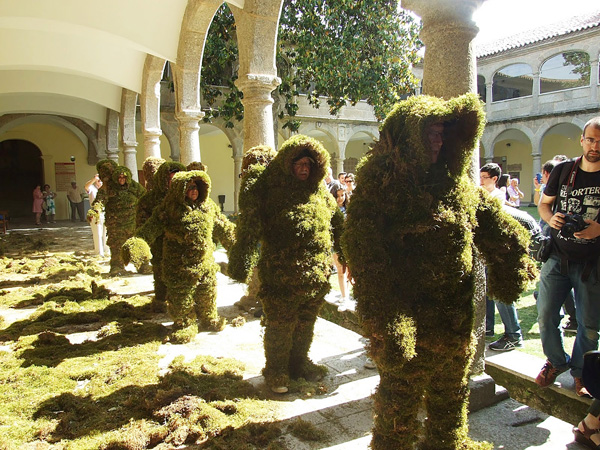
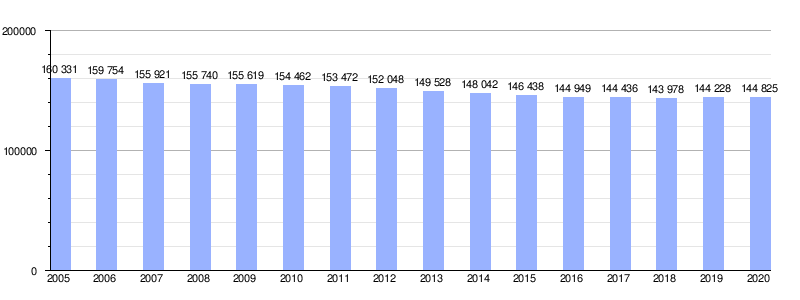

VOLVER ARRIBA
GEOGRAFÍA
Integrado en la comarca de Campo Charro, la capital salmantina se encuentra a 64 kilómetros de Zamora, a 109 kilómetros de Ávila, a 121 kilómetros de Valladolid, a 123 kilómetros de Portugal y a 202 kilómetros de Cáceres.
El relieve del municipio se caracteriza por la confluencia de dos unidades geológicas y ambientales del suroeste de la meseta castellano-leonesa a orillas del río Tormes. Por un lado, en dirección norte y este, la cuenca sedimentaria terciaria, caracterizada por extensas planicies dedicadas a cultivos de secano; por el otro, la penillanura del zócalo paleozoico hacia el sur y el oeste,
donde predomina un ecosistema de encinares y pastizales conocido como Campo Charro, dedicado en su mayor parte a la ganadería.
La ciudad está situada a una altitud de 800 metros sobre el nivel del mar. La altitud del municipio varía desde los 911 metros (Los Montalvos), en el suroeste, y los 763 metros en el último tramo en el municipio del río Tormes.
PICO MÁS ALTO
Con sus 2.428 metros, el Canchal de la Ceja puede presumir de ser el pico más elevado. Se halla enclavado en el límite de las provincias de Salamanca y Ávila, entre la Sierra de Béjar y la vertiente occidental de la Sierra de Gredos. La curiosa forma del nevero que hay en su cara norte es el origen de su extraño nombre.


https://diariosenderista.es/2019/01/06/
https://www.viajaporlibre.com/senderismo
VOLVER ARRIBA
HISTORIA
Salamanca ha quedado vinculada a la Historia Universal por una serie de hechos y personalidades que llegaron a marcar la evolución de la sociedad occidental.
La creación de la primera gramática del castellano en 1492 por Antonio de Nebrija, la célebre Grammatica. Fue el primer estudio de las reglas de una lengua europea occidental que no era el latín y este hecho marca el inicio del Siglo de Oro español.
Antonio de Nebrija fue además la primera persona del mundo occidental en reclamar derechos de autor.
Los preparativos de Cristóbal Colón para su primer viaje en el descubrimiento de América. El Claustro de la Universidad de Salamanca se llegó a reunir en consejo para tratar su proyecto. Durante estos años, Colón logra el apoyo de los dominicos, hospedándose en el convento de San Esteban. El astrónomo salmantino Abraham Zacut fue su gran apoyo científico para el viaje.
La primera mujer profesora de universidad del mundo, Luisa de Medrano, durante el curso 1508-1509.
Los años de estudio de Hernán Cortés antes de partir a América y conquistar el Imperio azteca.

Edad Antigua
El primer hábitat humano en el solar salmantino se ha fechado a comienzos del primer milenio antes de Cristo. Así lo atestiguan los restos cerámicos hallados en el «cerro de San Vicente» y que han sido adscritos a la cultura de Cogotas I del Bronce Final. En este mismo cerro se ha hallado lo que hasta la fecha se considera el primer asentamiento humano de carácter estable y continuo, aunque ya adscrito a la cultura del Soto de Medinilla de la primera Edad del Hierro (siglo vii a. C.). Con posterioridad, ya en la segunda Edad del Hierro (desde el siglo iv a. C.), se ha constatado que se desarrolló un nuevo núcleo de población en el denominado «teso de las catedrales o cerro de San Isidro», este ya de carácter castreño y que perduró hasta la definitiva romanización de la ciudad. Todos estos asentamientos, y por tanto el actual emplazamiento de Salamanca, deben su existencia a las especiales características geomorfológicas del terreno sobre el que se asentaron. Así pues, en la elección de la ubicación de estos sucesivos asentamientos debió tener una especial influencia que esta zona contara con tres tesos —formados por la erosión de los arroyos de San Francisco y Santo Domingo—, sus correspondientes vaguadas y especialmente la proximidad del río Tormes. Estos detalles remiten a la idoneidad de este territorio a las primitivas funciones de defensa y de control del territorio circundante.
El asentamiento del cerro de San Isidro debió ser una ciudad de gran entidad entre los siglo iv y II a. C., no solo por sus dimensiones, si no que también por sus óptimas condiciones orográficas y de protección defensiva, ya que contó con muralla y foso. En el 220 a. C., Aníbal, en su avance por Iberia, sitió y conquistó la antigua ciudad de Helmántica (Salamanca). Así, Plutarco dice que «Anibal la sitió y sus moradores, por evitar mayores daños, se le sometieron ofreciéndoles trescientos talentos de plata y otros tantos rehenes, alzando el sitio, los Helmantiqueses, faltaron a sus promesas y protegidos por sus mujeres que habían escondido las armas y lograron vencer a las tropas de Anibal». Sin embargo, el general cartaginés terminó apresándolos y, según Polibio, «admirado por la valentía de sus mujeres, por ellas devolvió a sus hombres la patria y la riqueza».
Edad Media
Con el fin del Imperio Romano Occidental, los alanos se establecen en Lusitania y la ciudad pasa a formar parte de esta región. Posteriormente los visigodos conquistan la ciudad y la anexionan a su territorio. Se tienen pocos datos sobre el desarrollo de Salamanca en la época visigoda, solamente se sabe que en el siglo iv la muralla romana se amplía con torreones sobre el mismo trazado, y que la fábrica de la cerca anterior quedó destruida prácticamente en su totalidad. Se sabe que en 589 la ciudad era sede episcopal pues figura entre las ciudades que enviaban obispos a los concilios de Toledo.
En el año 712, con la invasión musulmana de la península ibérica, Musa ibn Nusair conquista la ciudad. Durante la Alta Edad Media, la zona quedó como «tierra de nadie» y gran parte de sus núcleos de población resultaron destruidos por las frecuentes incursiones (algaradas) de los árabes. Salamanca quedó reducida a un núcleo carente de importancia y casi despoblado, aunque se mantuvo intacto el puente, con algunos pobladores en los alrededores. Los sucesivos intentos de los reinos cristianos de estabilizar la zona originaron no pocos choques con las expediciones musulmanas hacia el norte, que provocaron diversas escaramuzas y batallas, como la de Alfonso I de Asturias en 754, que acabaron por arrasar lo que quedaba de urbano.
Edad Moderna
Como el resto de núcleos históricos de la Corona que tenían representación en Cortes, Salamanca se unió al movimiento de las Comunidades de Castilla (1520) contra los nuevos impuestos que reclamaba Carlos I en las Cortes y en defensa de sus manufacturas textiles contra los privilegios de los exportadores de lana. Tras la derrota de los Comuneros el rey Carlos I hizo desmochar las torres de los palacios de los salmantinos que se adhirieron a la revuelta.
El siglo xvi fue la época de mayor esplendor de la ciudad, tanto en la demografía como en la vida universitaria, gracias al prestigio de sus profesores, con la llamada Escuela de Salamanca (se calcula que Salamanca tenía unos 24 000 habitantes y hacia 1580 se matriculaban cada año 6500 estudiantes). Después se unió a la decadencia generalizada de las ciudades de la Corona de Castilla en la meseta norte (12 000 habitantes en 1651). Además, fue alrededor de entonces cuando se construyó la Iglesia de San Isidoro.
Edad Contemporánea
Durante la guerra de la Independencia, Salamanca fue ocupada por las tropas del mariscal Soult en 1809 y permaneció en manos francesas hasta la batalla de los Arapiles (1812), en la que vencieron los ejércitos aliados bajo el mando de Wellington. Durante la ocupación, los franceses construyeron defensas y, para obtener materiales, destruyeron una importante parte de los edificios salmantinos, especialmente del barrio llamado de Caídos (derruidos), donde se levantaban conocidos colegios mayores de la Universidad, de los que no queda ni rastro. El peor momento llegó cuando Fernando VII cerró las universidades españolas. A partir de la reapertura, la de Salamanca quedó reducida a una universidad de provincias. Por la provincia de Salamanca actuó el guerrillero y militar salmantino Julián Sánchez "el Charro" al mando de la unidad Lanceros de Castilla.

Salmanca en el 1858.
En 1873, tras proclamarse la Primera República, se acometió el primer intento serio de federalización de España mediante el proyecto de Constitución de 1873. Apenas cinco días después de la presentación de este proyecto, Salamanca sufrió un levantamiento cantonalista que, tras cuatro días de éxito, fue sofocado el 26 de julio de 1873. Posteriormente, un pronunciamiento militar se llevó por delante la I República y de paso la iniciativa regionalizadora del Estado Federal. Durante el resto del siglo xix la ciudad experimentó una leve recuperación al ser nombrada capital de provincia y al haberse construido el ferrocarril que unía Francia con Portugal, y que pasaba por la Meseta (Medina del Campo y Salamanca, 1877).
La sublevación del ejército contra la Segunda República triunfó en Salamanca desde el primer momento, siendo detenido y fusilado el alcalde de Salamanca Casto Prieto Carrasco por las tropas franquistas. Durante la Guerra Civil, entre octubre de 1936 y noviembre de 1937, el Palacio Episcopal fue residencia y centro de mando del general Franco. La ciudad fue también sede de las organizaciones falangistas y de algunos Ministerios.
https://www.youtube.com/watch?v=7zVxMriM7R0
VOLVER ARRIBA
CULTURA
Salamanca cuenta en la actualidad con dos universidades, la Universidad de Salamanca (pública) y la Universidad Pontificia, universidad privada dependiente de la Iglesia católica. Entre ambas superan ampliamente la cifra de 32 000 alumnos matriculados. Su alumnado procede de todas las comunidades autónomas y la matrícula de estudiantes extranjeros es una de las más elevadas de toda España. La Universidad de Salamanca es la institución de enseñanza superior más antigua de la España cristiana, tras el Estudio General de Palencia, que no existe en la actualidad. Alfonso IX de León otorga el grado de Estudio General en 1218 a las escuelas catedralicias de Salamanca emulando a su sobrino Alfonso VIII de Castilla, que lo había hecho con Palencia en 1208. La fecha de 1218 es considerada oficialmente como el nacimiento del «Studii salmantini».118 Tras la integración del Reino de León en la Corona de Castilla bajo el cetro de Fernando III, la importancia del estudio Salmantino hace languidecer al de Palencia, que acabará por desaparecer. En 1254 Alfonso X el Sabio concedió a Salamanca el título de Universidad, ratificado por el papa en 1255, lo que la convierte en la primera europea en ostentar dicho título.
A mediados del siglo xvi la Universidad estaba en pleno auge; era famosa en todo el mundo y de sus profesores se decía: Multos et doctissimos Salmantica habet («Muchos y muy doctos tiene [la universidad de] Salamanca»). En 1492 se redactó y publicó en Salamanca la primera gramática de la lengua castellana por Antonio de Nebrija. En sus aulas tuvo lugar el nacimiento de un movimiento de pensamiento global, la Escuela de Salamanca, en cuyo seno se elaboraron muchos de los conceptos modernos de política, derecho o economía.

https://es.wikipedia.org
VOLVER ARRIBA
NATURALEZA
Salamanca es conocida por la impresionante riqueza patrimonial y monumental que atesora dentro de la propia capital. Con multitud de casas nobiliarias, iglesias y lugares llenos de misterios y leyendas que consiguen enamorar a todos los apasionados de la historia. Y no sólo cuenta con atractivos monumentales dentro de la propia capital, sino que muchos de sus pueblos, que todavía conservan prácticamente intacta su arquitectura tradicional, constituyen una joya en sí mismos, especialmente los ubicados en la Sierra de Francia, al sur de la provincia.
VIDEO
VOLVER ARRIBA
TRADICIONES
Estas son unas de las tradiciones mas represetativas de Salmanca:
Las Águedas, forman parte de las 10 tradiciones más representativas de Salamanca
Siglo XI, durante la ocupación árabe, las mujeres de Zamarramala distrajeron a los árabes que habían ocupado la ciudad.
Sobre todo, para que los hombres recuperaran el Alcázar.
Tras ser descubiertas, la mujer que lideró el plan fue castigada cortándole los pechos, aplicándole el martirio de Santa Águeda.
Conmemorando ésta valerosa acción, cada 5 de Febrero se otorga simbólicamente el bastón de mando siendo lo más destacable.
En todos los ayuntamientos en Castilla y León, a las mujeres de cada localidad.
Una jornada de baile charro con trajes tradicionales y de protagonismo absoluto para las mujeres salmantinas.

Cada año el día 25 julio se coloca la Mariseca en lo alto de la torre del Ayuntamiento de Salamanca.
Que consiste en la colocación de una bandera de España acompañada de un toro de hojalata.
Éste acontecimiento anuncia el inicio de las celebraciones de corridas de toros de la feria de Septiembre.
Dicha tradición, se viene celebrando desde el siglo XV.
Antiguamente se premiaba a la persona que realizaba la hazaña de colocarla, con uno de los toros lidiados en los festejos.
En épocas anteriores se daban más corridas a lo largo del año y siempre se repetía el evento en jornadas anteriores a la celebración de lidia de toros bravos.

Según cuenta la leyenda durante la ocupación musulmana en el siglo XII.
Un grupo de hombres se reunieron en la finca La Centena, en la zona conocida como El Castañar.
Donde acordaron recubrir sus cuerpos con musgo y al amanecer asaltar la fortaleza.
Se dirigieron hacia una de las puertas del recinto amurallado (llamada desde entonces Puerta de la traición.
Logrando asustar a los centinelas musulmanes y de esta manera tuvieron acceso al interior de la cuidad y así la reconquistaron.
Esta procesión se celebra cada Domingo siguiente al Jueves de Corpus, desde 1345, siendo transmitida de padres a hijos. En 1998 fue declarada Fiesta de Interés Cultural.

VOLVER ARRIBA
OTROS ASPECTOS
Demografía de Salmanca
Durante el siglo xxi la población de la ciudad de Salamanca decrece ligeramente en término de población, ya que esta se dispersa por los municipios de los alrededores, donde el terreno es más barato, para instalar nuevas actividades económicas o mudarse a alguna de las numerosas urbanizaciones circundantes. Este ligero declive comenzó en el año 2004, cuando la ciudad contaba con una población de 160 415 habitantes, de los cuales 74 756 eran hombres y 85 659 mujeres, mientras que en 2018 contaba con 143 978 habitantes, de los cuales 65 278 eran hombres y 78 700 mujeres, por lo tanto en el periodo 2004-2018 se registra una pérdida de 16 437 habitantes.

VOLVER ARRIBA